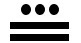
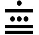

All Friedman numbers with 4 or fewer digits are known:
25, 121, 125, 126, 127, 128, 153, 216, 289, 343, 347, 625, 688, 736, 1022, 1024,
1206, 1255, 1260, 1285, 1296, 1395, 1435, 1503, 1530, 1792, 1827, 2048, 2187, 2349,
2500, 2501, 2502, 2503, 2504, 2505, 2506, 2507, 2508, 2509, 2592 ,2737, 2916, 3125,
3159, 3281, 3375, 3378, 3685, 3784, 3864, 3972, 4088, 4096, 4106, 4167, 4536, 4624,
4628, 5120, 5776, 5832, 6144, 6145, 6455, 6880, 7928, 8092, 8192, 9025, 9216, 9261.
Mike Reid, Ulrich Schimke, and Philippe Fondanaiche solved all the Friedman numbers with 4 or fewer digits. Here are the solutions:
| 25 = 52 | 121 = 112 | 125 = 51+2 | 126 = 6 × 21 | 127 = – 1 + 27 | 128 = 28–1 |
| 153 = 3 × 51 | 216 = 62+1 | 289 = (8 + 9)2 | 343 = (3 + 4)3 | 347 = 73 + 4 | 625 = 56–2 |
| 688 = 8 × 86 | 736 = 7 + 36 | 1022 = 210 – 2 | 1024 = (4 – 2)10 | 1206 = 6 × 201 | 1255 = 5 × 251 |
| 1260 = 6 × 210 | 1285 = (1 + 28) × 5 | 1296 = 6(9–1)/2 | 1395 = 15 × 93 | 1435 = 35 × 41 | 1503 = 3 × 501 |
| 1530 = 3 × 510 | 1792 = 7 × 29–1 | 1827 = 21 × 87 | 2048 = 84 / 2 + 0 | 2187 = (2 + 18)7 | 2349 = 29 × 34 |
| 2500 = 502 + 0 | 2501 = 502 + 1 | 2502 = 2 + 502 | 2503 = 502 + 3 | 2504 = 502 + 4 | 2505 = 502 + 5 |
| 2506 = 502 + 6 | 2507 = 502 + 7 | 2508 = 502 + 8 | 2509 = 502 + 9 | 2592 = 25 × 92 | 2737 = (2 × 7)3 – 7 |
| 2916 = (1 × 6 × 9)2 | 3125 = (3 + 1 × 2)5 | 3159 = 9 × 351 | 3281 = (38 + 1) / 2 | 3375 = (3 + 5 + 7)3 | 3378 = (7 + 8)3 + 3 |
| 3685 = (36 + 8) × 5 | 3784 = 8 × 473 | 3864 = 3 × (– 8 + 64) | 3972 = 3 + (9 × 7)2 | 4088 = 84 – 8 – 0 | 4096 = (4 + 0 × 9)6 |
| 4106 = 46 + 10 | 4167 = 46 + 71 | 4536 = 56 × 34 | 4624 = (64 + 4)2 | 4628 = 682 + 4 | 5120 = 5 × 210 |
| 5776 = 767–5 | 5832 = (2 × 5 + 8)3 | 6144 = 6 × 44+1 | 6145 = 6 × 45 + 1 | 6455 = (64 – 5) × 5 | 6880 = 8 × 860 |
| 7928 = 892 + 7 | 8092 = 902 – 8 | 8192 = 8 × 29+1 | 9025 = 952 + 0 | 9216 = 1 × 962 | 9261 = 219–6 |
In 2002, I wrote a program capable of finding all the 5-digit Friedman numbers. In 2013, Giovanni Resta found an omission. In 2019, Elke Kuge found some typos. They are here.
The 6-digit nice Friedman numbers are here. Michael Yee found some typos and an omission.
In 2013, all the 6-digit Friedman numbers were computed by Giovanni Resta. They can be found here.
In 2023, all the 7-digit Friedman numbers were computed by Michael Yee. They can be found here. And here are the nice ones.
Here are the number of Friedman numbers known with n digits:
| Number of Digits | Number of Friedman Numbers | Number of Nice Friedman Numbers |
|---|---|---|
| 1 | 0 | 0 |
| 2 | 1 | 0 |
| 3 | 13 | 3 |
| 4 | 58 | 11 |
| 5 | 772 | 93 |
| 6 | 8968 | 530 |
| 7 | 114445 | 3591 |
Here is a graph of the size of the Friedman numbers with 6 or fewer digits:
And here is a graph of the size of the nice Friedman numbers with 6 or fewer digits:
Mike Reid, Philippe Fondanaiche, and I found that 123456789 = ((86 + 2 × 7)5 – 91) / 34 and 987654321 = (8 × (97 + 6/2)5 + 1) / 34 are Friedman numbers. In 2007, Chris Wardle found another pandigital Friedman number. Bruno Curfs found another in 2008, and several more in 2013 and 2015. The known 9- and 10-digit pandigital Friedman numbers can be found here. There are even some nice pandigital Friedman numbers known, all of which but one were found by Igor Krasikov, and they can be found here
A vampire number is a number that can be written as the product of numbers that together contain the same digits as the number itself. This sequence, a subsequence of the Friedman numbers, begins 126, 153, 688, 1206, 1255, 1260, 1395, 1435, 1503, 1530, 1827, 2187, 3159, 3784, 6880, . . . , and is sequence A020342 of the Encyclopedia of Integer Sequences. Philippe Fondanaiche sent me lots of vampire numbers, but noticed that vampire numbers get more and more rare, so that the vast majority of Friedman numbers use the exponential operator.
Bruno Curfs sent these files of pandigital vampire numbers. Some have 9 digits and others have 10 digits.
Several contributors were interested in repdigit Friedman numbers. The best known results on these are here. The sequence of Friedman numbers which contain exactly 2 different digits starts 25, 121, 343, 688, 29929, 46644, 46646, 46664, 55225, 117777, 244224, 699696, 699966, .... What are the next terms?
Robert Reid notes that 7776 would be a Friedman number if we allowed decimal points: 7776 = 67/(.7+.7). Jacon Minninga showed the same about 4875 = 7.8 × 54.
The following people disproved that F(n)/n → 0. Brendan Owen used N,12588304 = N × 108 + 35482. Mike Reid used N,46656 = N × (4+6)5 + 66. Note that these examples also show that there are Friedman numbers beginning with any string of digits.
Michael Brand sent me an amazing proof in March of 2010 that F(n)/n → 1. It was published in 2013: Michael Brand, "Friedman numbers have density 1", Discrete Applied Mathematics, 161 (16-17), pp. 2389-2395, 2013.
Ulrich Schimke conjectures that for every k which is not a power of 10, kn is a Friedman number for arbitrarily large n. He notes that 2n appears to be a Friedman number for all n>9. Trevor Green points out that all powers of 5 seem to be Friedman numbers.
A pretty wild narcissistic number uses the digits in order, but also allows the square root and factorial operators. So nice Friedman numbers are a subset of these numbers.
Philippe Fondanaiche noticed that most Friedman numbers are composite. The first few known prime Friedman numbers are 127, 347, 2503, 12101, 12107, 12109, 15629, 15641, 15661, 15667, 15679, 16381, 16447, 16759, 19739, . . . .
Ron Kaminsky proved that there are infinitely many prime Friedman numbers. The numbers k×1014+19683 = k×106+8+39+0+0+ . . . are Friedman numbers for all k. The numbers of this form are an arithmetic sequence a n+b where a and b are relatively prime, and therefore, by a well-known theorem of Dirichlet, the sequence contains an infinite number of primes. In 2020, Madeline Birchfield generalized this result to arbitrary bases.
Here are some other results of mine on Friedman numbers. There are arbitrarily long strings of consecutive Friedman numbers, because of the numbers from 25×102n to 25×102n + 10n – 1 are 10n consecutive Friedman numbers. For example, 250068 = 5002+68. This also shows that there are Friedman numbers ending with any string of digits.
Since the density of Friedman numbers approaches 1, this means the density of numbers that are the sum of 2 Friedman numbers also approaches 1. Are all arbitrarily large numbers the sum of 2 Friedman numbers? The largest number known NOT to be the sum of 2 Friedman numbers is 134632. I suspect that is the last one. Since the first 2 Friedman numbers 25 and 121 are coprime, it is easy to prove that the largest number that is not the sum of any number of Friedman numbers is 486.
It is also easy to show that if n>60, there is a Friedman number between n and 2n. Zeroes can be added to the right of any of the Friedman numbers 688 = 8 × 86, 1206 = 6 × 201, 1827 = 21 × 87, 3159 = 9 × 351, and 3784 = 8 × 473. The list at the top of the page handles the small cases.
The known Friedman numbers in other small bases can be found here.
Trevor Green proved that there are infinitely many Friedman numbers in every base by considering numbers of the form 1000...02000...01=1000...012+0+0+...+0 in bases larger than 2 and numbers of the form 1000...01000...0001=1000110+0+0+...+0 in base 2.
Trevor Green also writes: "25 is a Friedman number in bases 2, 3 and 4 as well as base 10. What other numbers are Friedman numbers in more than one base, or in an unusually large number of bases? What numbers are not Friedman numbers in any base?"
Trevor Green has found several other strings which are Friedman numbers in all large bases, such as 102030201 = (10301 – 200)2 and 1367631 = (117 – 6)(6+3)/3. Also, he found the series 121 = 112, 12321 = (113 – 2)2, 1234321 = (1143 – 32)2, 123454321 = (11543 – 432)2, . . . .
Trevor Green noticed that when a>1 and b>2, 1ab is a Friedman number in base a(b–1), since it can be written 1ab = b×a1. He also noted that when a>1 and b>1, if we let c=a×b and d=a2×b, then acd is a Friedman number in base b×(d–1), since it can be written acd = c×da.
In 2007, Trevor Green sent me a list of the 3-digit Friedman numbers in all bases up to 100 that are not part of a known family. They can be found here. A month later he sent me some of the patterns from the list.
Robert Happelberg invented the concept of Roman Friedman Numbers. Here are the ones we found less than 100:
| Roman Friedman Numbers | |||
| VIII = (V – I) × II (AR) | XVIII = X + (V – I) × II (AR) | XXVII = IX × (X/V + I) (BH) | XXVIII = XX + (V – I) × II (AR) |
| XXXIII = XI × (X/X + II) | XXXVI = VIXX/X | XXXVII = IX × (X/V + I) + X (BH) | XXXVIII = XXX + (V – I) × II (AR) |
| XLIV = L – V – IX | XLVI = L – V + IX | XLVII = L – X/V – I × I (BH) | XLVIII = XL + (V – I) × II (AR) |
| XLIX = L – IXX | LVIII = L + (V – I) × II (AR) | LXVIII = LX + (V – I) × II (AR) | LXXIV = L × XV / X – I (BH) |
| LXXV = L / X × XV (BH) | LXXVI = L / X × XV + I (BH) | LXXVII = L / X × XV + II (BH) | LXXVIII = L / X × XV + III (BH) |
| LXXXI = IXX×X/L | LXXXII = IXX×X/L + I | LXXXIII = IXX×X/L + II | LXXXIV = LX / X × XIV (AF) |
| LXXXVI = L × XV / X + XI | LXXXVII = L × XV / X + XII | LXXXVIII = LXXX + (V – I) × II (AR) | LXXXIX = X × (X – IL) – X/X |
| XCIV = C – V – IX | XCVI = C – V + IX | XCVII = C – X/V + I×I | XCVIII = XC + (V – I) × II (AR) |
| XCIX = C – IXX | |||
In 2013, Alan Frank found the first non-trivial nice Roman Friedman number. Then Bryce Herdt found several more. Then Alex Rower pointed out that any number ending in 8 is a nice Roman Friedman number.
In 2016, I generalized the notion of Friedman numbers to Mayan Friedman numbers. Mayan numerals use dots for 1's, horizontal lines for 5's, and a base-20 positional system. Thus  stands for 13, and  stands for 6×20+13=133.
The majority of numbers are Mayan Friedman numbers, because if n is one of them, then we can add dots and lines to the last "digit" of n and the result will still be a Mayan Friedman number. For example, 8 is a Mayan Friedman number because = ( – ) × , and therefore 13 is also a Mayan Friedman number because = ( – ) × + .
If n is a Mayan Friedman number, and n–1 and n–5 are either not Mayan Friedman numbers, or don't have the same quotient modulo 20, we say n is a primitive Mayan Friedman number. Then we can add 1's and 5's to the last "digit" to get all Mayan Friedman numbers from these. Alex Rower points out that all Friedman numbers in base 20 are also Mayan Friedman numbers. Here is a list of the possible primitive Mayan Friedman numbers less than 300:
| Primitive Mayan Friedman Numbers | |||||||
| 4 = 2 × 2 | 8 = (5 – 1) × 2 | 29 = 25 – 3 | 30 = 6 × 5 | 42 = 21 × 2 | |||
| 50 = 5 × 5 × 2 | 63 = 21 × 3 × 1 | 72 = 6 × 6 × 2 × 1 | 75 = 5 × 5 × (5 – 2) × 1 | 82 = 41 × 2 × 1 | |||
| 90 = 6 × 5 × 3 | 114 = 5 × 1 × (5 × 5 – 2) – 1 | 118 = 5 × 5 × 5 – 1 × 5 – 2 | 124 = 53 – 1 × 1 | 128 = 25 × (5 – 1 × 1) | |||
| 130 = 5 × (5 × 5 + 1) | 144 = (6 × 2 × 1)2 | 147 = 21 × (6 + 15) | 150 = 6 × 5 × 5 × 1 | 164 = 2 × (35–1 + 1) | |||
| 165 = 5 × (25 + 1) | 183 = 61 × (5 – 2) × 1 | 185 = 5 × (62 + 1) | 209 = 7 × 6 × 5 – 1 | 213 = 5 × 5 × 5 – 5 + 3 | |||
| 224 = (2 × 5 + 5)2 – 1 | 228 = 6 × (25 + 6) | 231 = (5 – 1)5–1 – 5 × 5 | 235 = 10 × (5 × 5 – 1) – 5 | 242 = (5 – 2)5 – 1 × 1 | |||
| 246 = 41 × (5 / 5 + 5) | 250 = 5 × 5 × 5 × 2 | 264 = 6 × (5 × 32 – 1) | 266 = (5 – 1)5–1 + 2 × 5 | 270 = 5 × (5 × 5 × 2 + 5 – 1) | |||
| 283 = (25–1 + 1)2 – 6 | 285 = 5 × (52 + 25) | ||||||
If you can extend any of these results, please e-mail me. Click here to go back to Math Magic. Last updated 1/30/20.